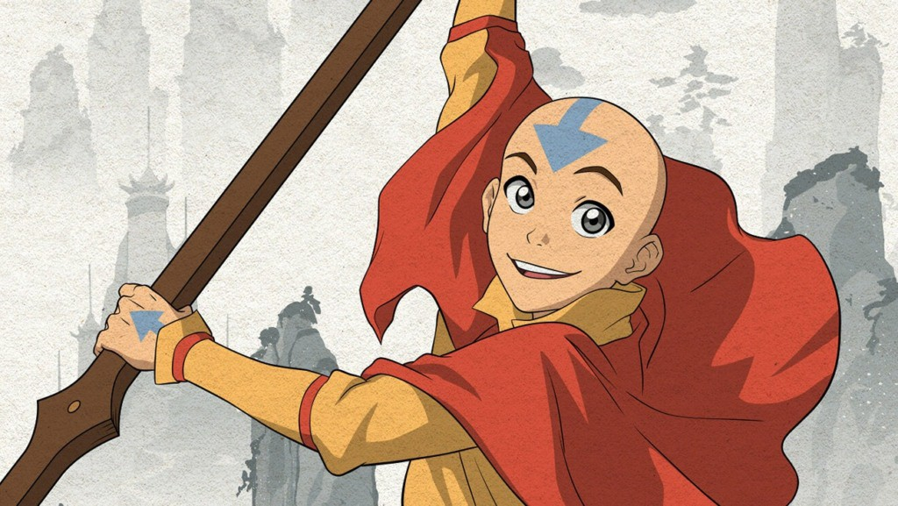
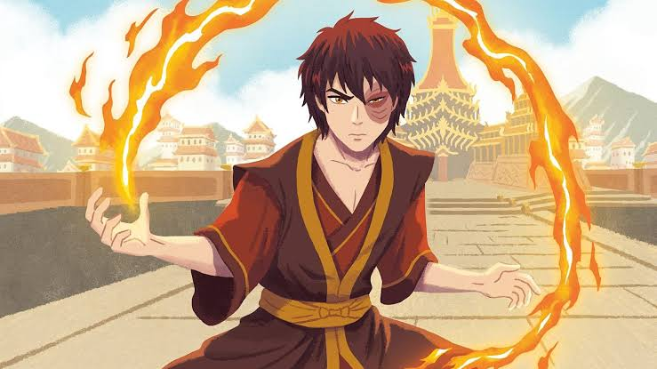
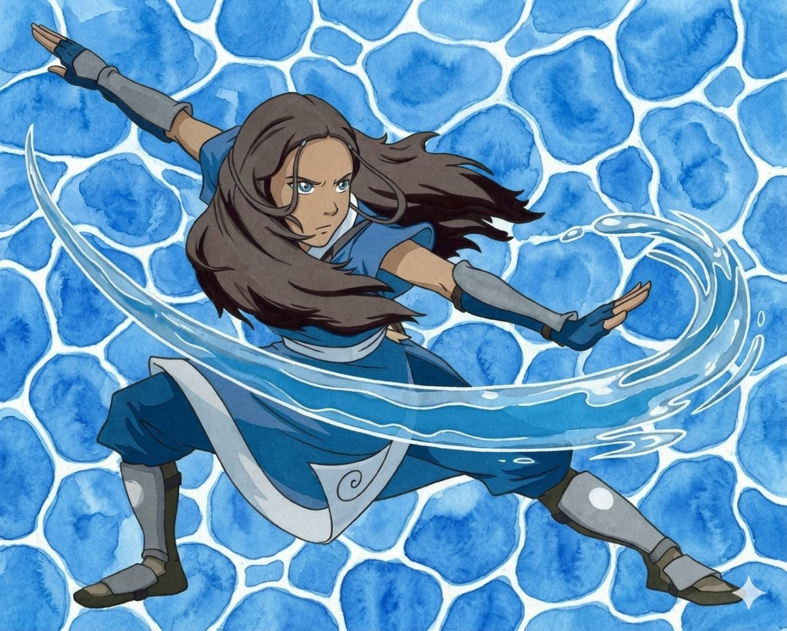
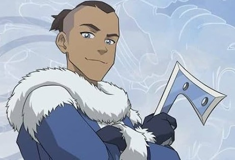
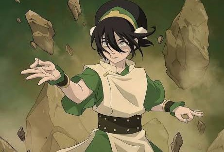

101 AN (Equiv. 1986)
Aang: O último mestre do ar
Os Nômades do Ar (Aang)🌪️ baseavam sua vida em um pacifismo estrito, vegetarianismo e desapego material em templos montanhosos, marcando seus mestres com tatuagens de setas azuis.

98 AN (Equiv. 1983)
Zuko: O príncipe exilado
Nação do Fogo (Zuko)🔥 desenvolveu uma sociedade altamente militarizada e industrializada, onde a honra é o valor supremo e conflitos são resolvidos no duelo ritualístico conhecido como Agni Kai.

Katara: A dobradora da água
Nação da Água (Katara)🌊 é conhecida por sua habilidade em dobrar água e sua forte conexão com a natureza, vivendo em comunidades costeiras e respeitando os ciclos naturais.

Sokka: O estrategista da tribo da água
Nação da Água (Sokka)🌊, irmão de Katara, é um guerreiro e estrategista da Tribo da Água do Sul, conhecido por sua inteligência, senso de humor e habilidades em combate sem dobrar elementos.

Toph: A mestre da terra
Reino da Terra (Toph)⛰️, uma jovem cega da Nação da Terra, é uma mestre da dobra de terra excepcional, conhecida por sua força, independência e habilidade em criar técnicas inovadoras de combate.